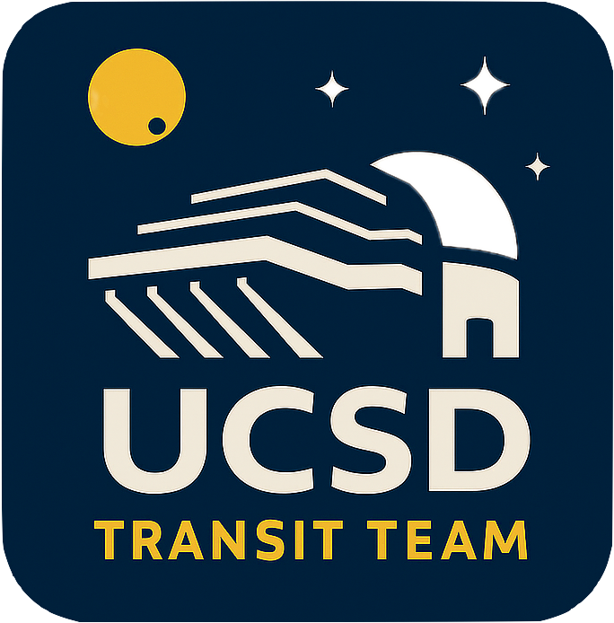

UCSD Transit Team
The UCSD Transit Team is a student-centered collaboration within UC San Diego focused on follow-up observations of transiting exoplanet candidates using facilities such as Lick Observatory.

Team Roster
| Name | Role |
|---|---|
| Loading roster… | |
Observing Schedule
The list below shows the three observing nights closest to today (past or future).
For nights in the future, weather forecasts from the National Weather Service are automatically
integrated when available (~7–10 days out).
Current Mt. Hamilton Conditions
Now
Loading current conditions…
Tonight
Loading tonight’s forecast…
View:
Loading schedule…
Resources
Internal resources for UCSD Transit Team members are stored in a shared Google Drive folder.
Open Team Resources